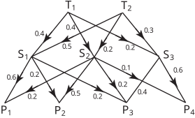

Long description: workbook7bl23

Alt text: A directed graph illustrates the calculation of probabilities or values between four initial states (\(P_1\) through \(P_4\)) and four subsequent states (\(S_1\) through \(S_4\)) via two intermediate states (\(T_1\) and \(T_2\)).
This description was generated by AI and has not been verified by a human. If you spot an error, please use the feedback link below.
- The diagram represents a transition system, visually structured like a layered network with states at four levels: \(P\) (the starting level), \(S\) (the first intermediate level), \(T\) (the second intermediate level), and the final level (implicitly \(P_4\) is the final sink or a distinct grouping).
- The starting states are labeled \(P_1\), \(P_2\), \(P_3\), and \(P_4\) at the bottom row.
- The subsequent states are labeled \(S_1\), \(S_2\), and \(S_3\) in the second row from the bottom.
- The intermediate states are labeled \(T_1\) and \(T_2\) in the third row from the bottom.
- The diagram shows directed arrows with numerical weights, representing probabilities or transition values.
- From \(P_1\):
- Arrows point to \(S_1\) with a weight of \(0.6\), to \(S_2\) with a weight of \(0.2\), and to \(T_1\) with a weight of \(0.4\).
- From \(P_2\):
- Arrows point to \(S_1\) with a weight of \(0.2\), to \(S_2\) with a weight of \(0.5\), and to \(T_1\) with a weight of \(0.4\).
- From \(P_3\):
- Arrows point to \(S_2\) with a weight of \(0.2\), to \(S_3\) with a weight of \(0.2\), and to \(T_2\) with a weight of \(0.3\).
- From \(P_4\):
- An arrow points only to \(S_3\) with a weight of \(0.6\).
- From \(S_1\):
- Arrows point to \(T_1\) with a weight of \(0.4\), to \(T_2\) with a weight of \(0.2\), and to \(S_2\) with a weight of \(0.5\).
- From \(S_2\):
- Arrows point to \(T_1\) with a weight of \(0.2\), to \(T_2\) with a weight of \(0.2\), and to \(S_3\) with a weight of \(0.1\).
- From \(S_3\):
- An arrow points only to \(T_2\) with a weight of \(0.2\).
- From \(T_1\):
- Arrows point to \(S_2\) with a weight of \(0.2\), and to \(T_2\) with a weight of \(0.2\).
- From \(T_2\):
- An arrow points only to \(S_3\) with a weight of \(0.4\).